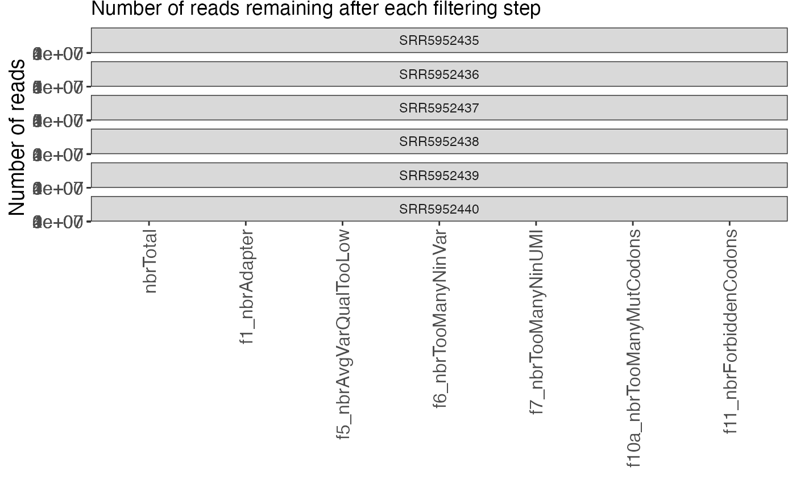

Visualize the filtering procedure
plotFiltering.RdDisplay the number (or fraction) of reads remaining after each step
of the internal mutscan filtering.
Usage
plotFiltering(
se,
valueType = "reads",
onlyActiveFilters = TRUE,
displayNumbers = TRUE,
numberSize = 4,
plotType = "remaining",
facetBy = "sample"
)Arguments
- se
A
SummarizedExperimentobject, e.g. fromsummarizeExperiment.- valueType
Either "reads" or "fractions", indicating whether to plot the number of reads, or the fraction of the total number of reads, that are retained after/filtered out in each filtering step.
- onlyActiveFilters
Logical scalar, whether to only include the active filters (i.e., where any read was filtered out in any of the samples). Defaults to
TRUE.- displayNumbers
Logical scalar, indicating whether to display the number (or fraction) of reads retained at every filtering step.
- numberSize
Numeric scalar, indicating the size of the displayed numbers (if
displayNumbersisTRUE).- plotType
Character scalar, indicating what to show in the plot. Either
"remaining"or"filtered".- facetBy
Character scalar, indicating the variable by which the plots should be facetted. Either
"sample"or"step".
Details
The function assumes that the number of reads filtered out in each step
are provided as columns of colData(se), with column names
of the form f[0-9]_filteringreason, and that all filtering columns
occur between the columns named nbrTotal and nbrRetained.
Examples
se <- readRDS(system.file("extdata", "GSE102901_cis_se.rds",
package = "mutscan"))[1:200, ]
plotFiltering(se)
